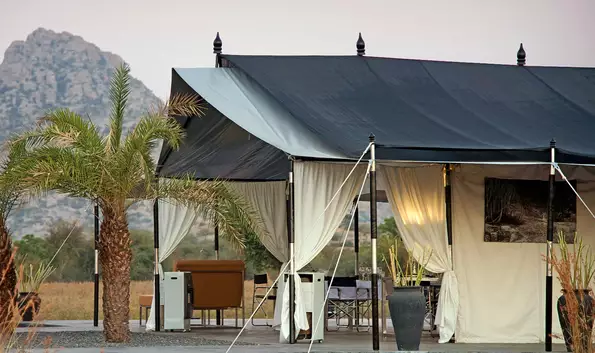
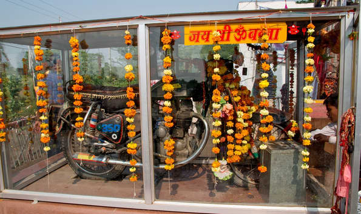
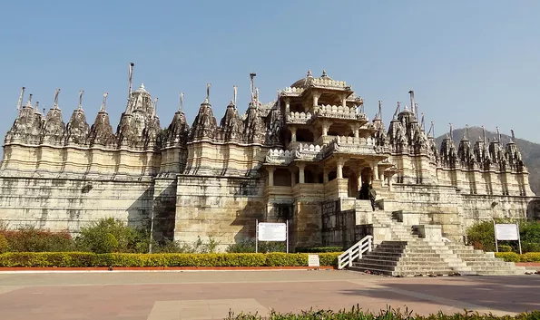

Chhatra Sagar delineates a beautiful set up representing captivating surrounding all around. The best scenes that make the vacation of the tourist are the sights like sunrise, sunset, birds brimming and pleasantly blooming rose petals.
Distance or location: Chhatra Sagar is situated in the district of Pali near the village and post office of Nimaj, Rajasthan.
Best time to visit: Best time to visit Chhatra Sagar is in between October to March at the time of winter.
Charges: The charges incurred for visiting Chhatra Sagar for two people is 36750 INR or 565. 602 USD for one person is 31,500 INR or 484.802 USD.
02 Jawai Leopard Camp

Jawai Leopard Camp is an eight-tent camp known for its sophistication. Placed in the Aravalli Hill, Jawai Leopard Camp is an enjoyable ride from either Jodhpur or Udaipur. Staying here in Jawai Leopard Camp means avoiding both the cumbersome rules and regulations of India’s reserve for wildlife and crowds.
Distance or location: Jawai Leopard Camp is located in Jawai Bandh Bisalpur in the district of Pali Marwar, Rajasthan.
Best time to visit: The best time to visit Jawai Leopard Camp is in between the months October to March during the winter season.
Charges: There is a certain fixed charge which you are supposed to pay before entering the Jawai Leopard Camp.
03 Om Banna Temple

Om Banna Temple is a holy shrine placed in the district of Pali near Jodhpur. Located at a distance of 20 kilometres from Pali and 50 kilometres from Jodhpur, Om Banna Temple is a highly devoted religious place making it a must visit place for the tourist.
Distance or location: Om Banna Temple is located opposite to Rajputana Hotel near National Highway 62 at Om Banna, Rajasthan.
Best time to visit: The best time to visit Om Banna Temple is in between October to March as this time is winter. The weather at this time in between the months October to March is cool, pleasant and tranquil.
Charges: There are no charges incurred for a visit to Om Banna Temple.
04 Ranakpur Jain Temple

Ranakpur is a popular Jain temple that is highly devoted to the Jain Tirthankar Rishabhanatha. Constructed in the 15th century, this place is worth visiting and called to be one of the best places in Rajasthan that catch the attention of the visitors from all over the globe.
Distance or location: Ranakpur Jain Temple is located at Ranakpur in Rajasthan.
Best time to visit: Ranakpur Jain Temple must be visited in between the time span from the beginning of October to end February. Winter season is the best season to visit Ranakpur Jain Temple to relish the ambience and climate thoroughly.